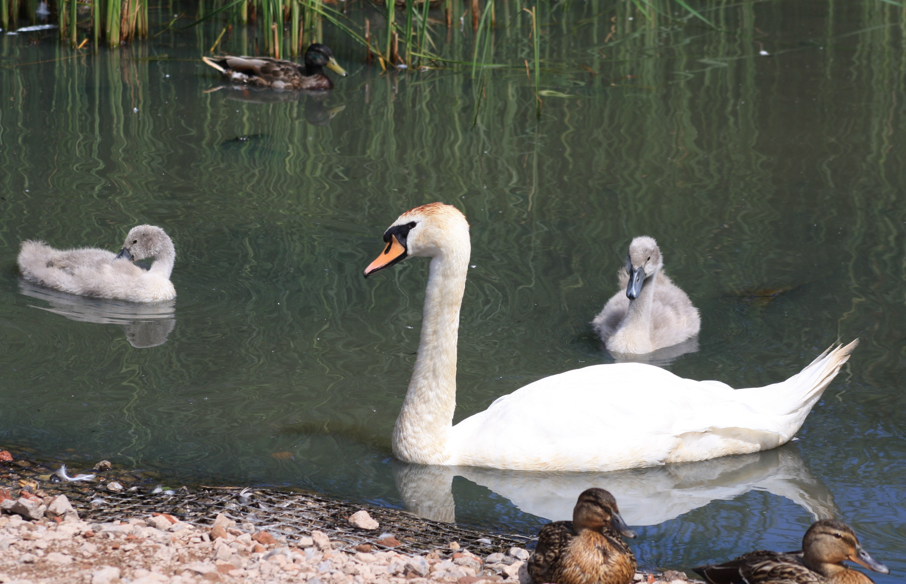
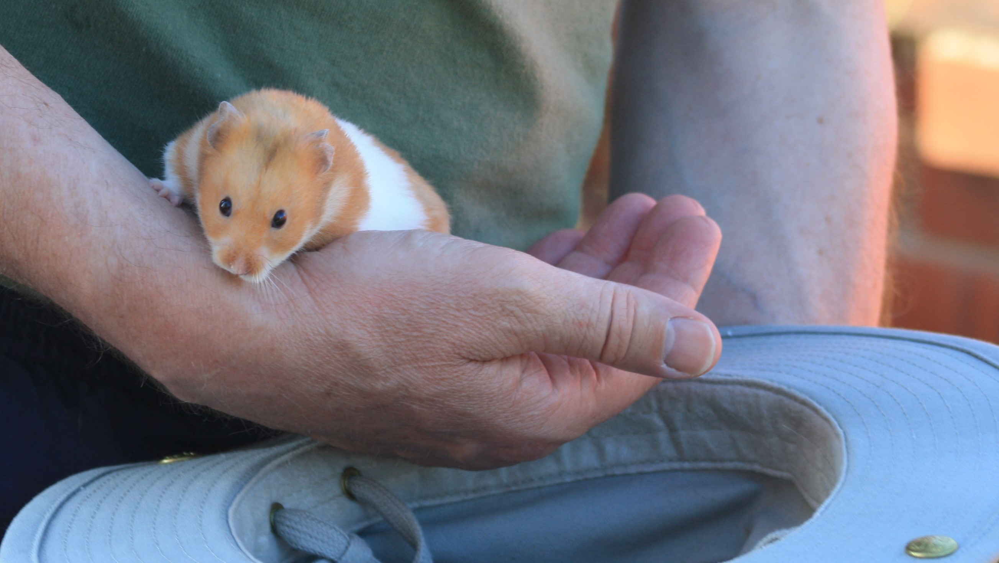
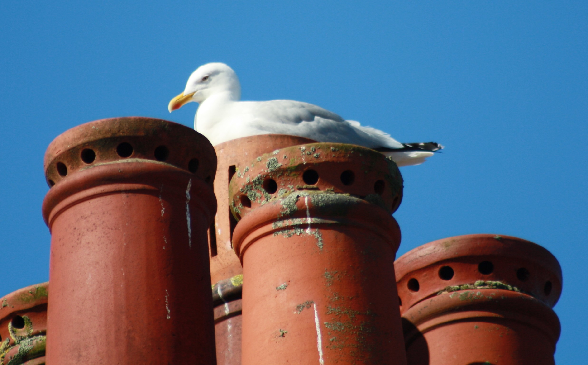

Nesting seagull, crouching hamster.
And a visit to Marton Mere Local Nature Reserve.
It's Day 19 of 30 Days Wild.
Yesterday, my humans ventured to Marton Mere. This is a local nature reserve near Stanley Park in Blackpool and shouldn’t be confused with WWT Martin Mere near Burscough. They both have lots of water, birds and places to walk though.

So, they completed a circuit of the mere, stopping to look through the various hides at the wildlife and to have a picnic in the glorious sunshine. At Heron hide they saw the heron, but it took to the skies before a camera could be pointed at it. Similarly the dragonflies were a bit too quick for my slow humans. The ducks and swans, plus their cygnets were content to be photographed.
Then I had a taste of the outdoors in the evening. As they started to clean my cage, I was scooped into some sort of bowl…not one I’d have eaten out of…come to think or it, they called it a hat. Then I was carried outside to survey the garden and the remains of the barbecue…no titbits left for me. Typical! They tried to interest me in the strawberries that were ripening. They obviously haven’t got the message that I don’t like them.
And I was shown the seagulls nesting on top of the next door neighbour’s chimney. Apparently there are chicks up there. I'm not climbing up to check so don't ask me to.
19-Jun-2017 | Milku